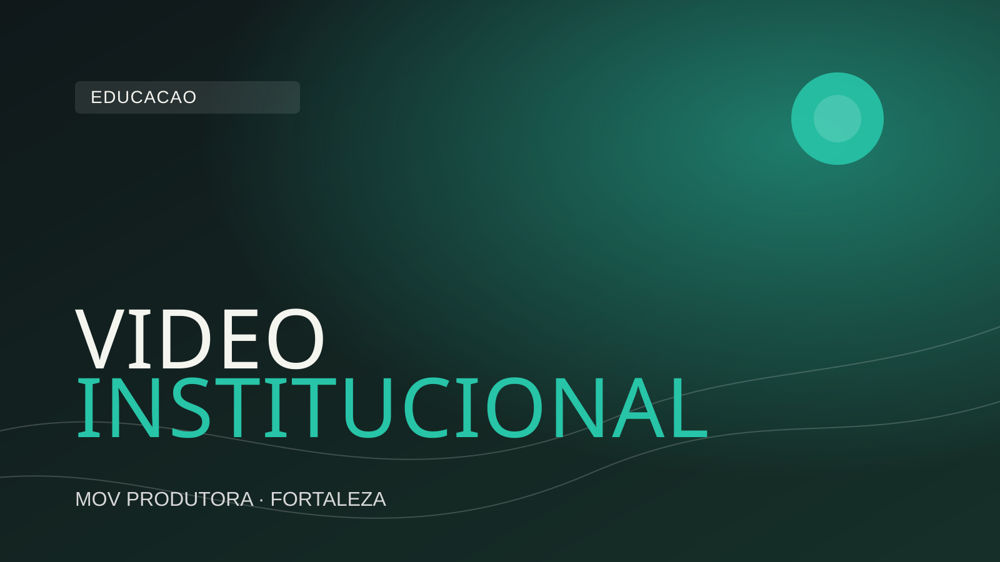

O termo "vídeo institucional" aparece frequentemente em reuniões de marketing e comunicação empresarial. Mas o que exatamente ele significa? Qual é a diferença entre institucional e publicitário? Quando faz sentido contratar um? E quanto tempo dura?
Este artigo responde essas perguntas com clareza — e vai além, mostrando como o vídeo institucional pode ser usado estrategicamente em diferentes momentos da vida de uma empresa.
O vídeo institucional é um formato audiovisual criado para apresentar uma organização — empresa, instituição, órgão público, ONG, escola, hospital — ao seu público. O objetivo central não é vender um produto ou serviço específico, mas construir e comunicar a identidade da organização: quem ela é, o que faz, como trabalha e por que existe.
Pense no vídeo institucional como o equivalente audiovisual de um discurso de apresentação poderoso. Se você fosse se apresentar a um cliente importante pela primeira vez, o que diria? Quais histórias contaria? Que valores ressaltaria? O institucional transforma essa apresentação em experiência audiovisual — com imagens reais, vozes reais, ambiente real e narrativa estruturada.
Diferente de um anúncio (que dura 15 a 30 segundos e tem foco em conversão imediata), o vídeo institucional tem duração mais longa — geralmente entre 1 e 4 minutos — e foco em construção de credibilidade e relacionamento. Ele não grita "compre agora". Ele convida: "nos conheça melhor".
Na prática, os dois termos são frequentemente usados como sinônimos no mercado brasileiro, e não há uma definição universalmente aceita que os separe. Mas existe uma distinção conceitual útil:
Para fins práticos, quando uma empresa diz que precisa de um "vídeo para o site" ou um "vídeo para apresentar a empresa", geralmente está falando de um vídeo institucional.
O vídeo institucional serve a múltiplos propósitos simultâneos — e essa é uma das razões pelas quais ele oferece um dos melhores retornos sobre investimento dentre todos os formatos de conteúdo.
Uma empresa que tem um vídeo institucional bem produzido transmite imediatamente um nível de profissionalismo e solidez que uma empresa sem vídeo não consegue comunicar apenas com texto e fotos. O investimento em produção audiovisual de qualidade é lido pelo mercado como sinal de maturidade empresarial.
Em reuniões com novos clientes, parceiros ou investidores, o vídeo institucional substitui ou complementa apresentações de slides. Ele é mais engajante, mais memorável e libera o apresentador para se concentrar na conversa, em vez de ficar explicando quem é a empresa.
Em mercados competitivos, onde vários fornecedores oferecem produtos ou serviços similares, o vídeo institucional pode ser o fator decisivo na escolha do cliente. A empresa que consegue fazer o prospect se identificar com seus valores e sua história tem uma vantagem que vai além do preço.
O vídeo institucional não serve apenas para clientes externos. Profissionais talentosos pesquisam as empresas antes de aceitar propostas de emprego. Um vídeo que mostra a cultura, o ambiente de trabalho e os valores da empresa pode ser decisivo para atrair os melhores candidatos — e reter os colaboradores que já estão lá.
Uma vez produzido, o vídeo institucional pode ser usado no site, no LinkedIn, no YouTube, em apresentações para investidores, em feiras e eventos, em materiais de imprensa e em campanhas de mídia paga. Um único investimento de produção gera conteúdo para todos esses pontos de contato.
Dentro do guarda-chuva do vídeo institucional, existem diferentes abordagens e formatos que servem a propósitos específicos:
O formato mais clássico. Apresenta a história, a missão, os valores, a equipe e os diferenciais da empresa. Ideal para o site e para apresentações comerciais. Duração típica: 2 a 3 minutos.
Destaca o ambiente de trabalho, os colaboradores e a cultura interna. Muito usado por empresas que querem atrair talentos ou comunicar seus valores de forma autêntica. Mostra "como é trabalhar aqui".
Para empresas que têm projetos sociais, ambientais ou de governança e querem comunicá-los de forma profissional. Cada vez mais importante para marcas que se posicionam com propósito.
Para aniversários de empresa, marcos importantes ou celebrações. Resgata a história, homenageia pessoas e reforça o vínculo emocional com clientes e colaboradores que acompanharam a jornada.
Explica como a empresa trabalha, qual é sua metodologia e quais são os diferenciais do seu processo. Muito eficaz em serviços B2B onde o "como fazemos" é tão importante quanto o "o que fazemos".
Existem momentos específicos na vida de uma empresa em que o vídeo institucional se torna especialmente necessário e estratégico:
A duração ideal depende do objetivo e do canal de distribuição. Como referência geral:
Uma prática recomendada é produzir diferentes versões do mesmo vídeo em diferentes durações — uma versão longa completa e versões editadas para diferentes plataformas. O custo adicional é pequeno comparado ao valor gerado pela versatilidade.
Independente do formato ou duração, um vídeo institucional eficaz deve conter os seguintes elementos:
Empresas que tratam o vídeo institucional como despesa estão perdendo uma perspectiva importante. Um vídeo institucional bem feito é um ativo de comunicação que trabalha pela empresa 24 horas por dia, 365 dias por ano, em todos os canais onde a marca está presente.
Ao contrário de um anúncio pago que para de funcionar quando o orçamento acaba, o vídeo institucional continua sendo exibido, compartilhado e gerando credibilidade enquanto ele representar fielmente quem a empresa é. Para a maioria das empresas, isso significa anos de retorno sobre um único investimento de produção.
Se a sua empresa ainda não tem um vídeo institucional profissional, ou se o que você tem foi feito há mais de 3 anos, pode ser a hora certa de investir em um novo. A MOV Produtora está em Fortaleza e produz vídeos institucionais para empresas do Ceará e de todo o Brasil.
Quer um orçamento para o vídeo institucional da sua empresa? Respondemos rapidamente.
Solicitar orçamento pelo WhatsApp